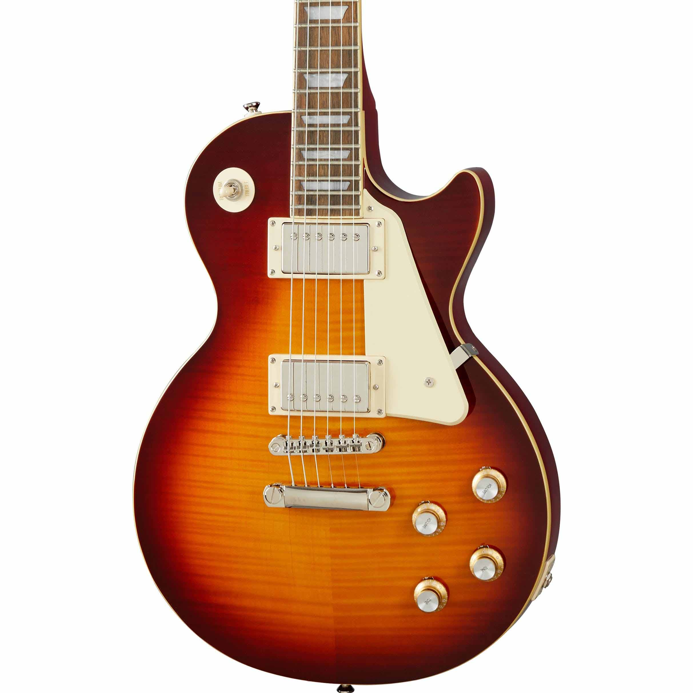

Las guitarras Gibson Les Paul son conocidas por su sonido distintivo y su elegancia clásica. Con su cuerpo de caoba y tapa de arce, ofrecen una resonancia cálida y rica, ideal para una amplia gama de géneros musicales. Sus pastillas humbucker proporcionan un tono potente y libre de interferencias, mientras que el mástil de caoba con diapasón de palisandro asegura una experiencia de toque suave y cómoda. Este icónico diseño combina tanto estilo como funcionalidad, convirtiéndola en una favorita entre guitarristas profesionales y aficionados por igual.
